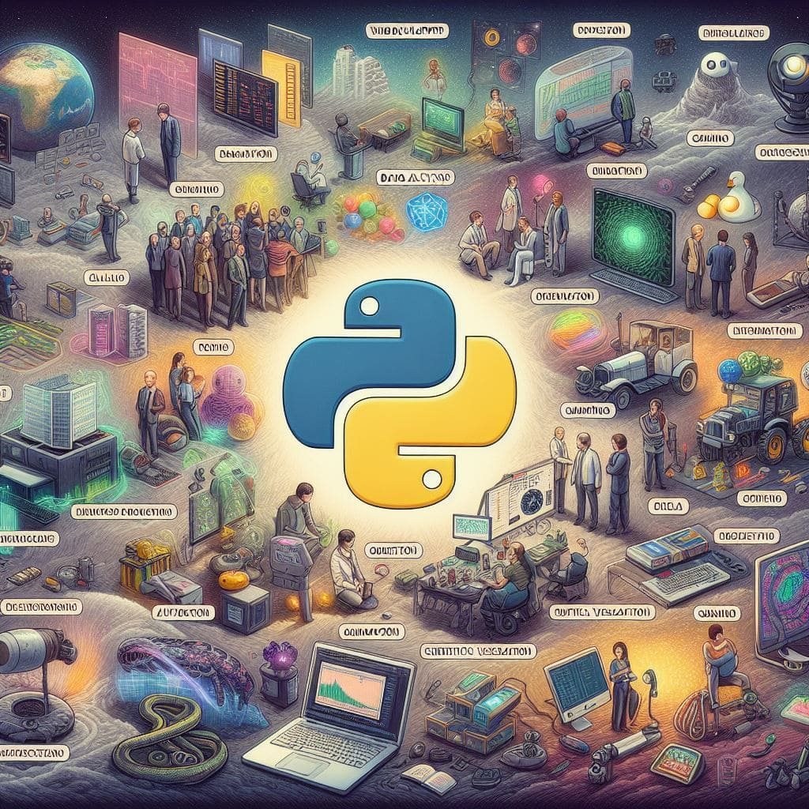

Explorando Python
Python es mucho más que un simple lenguaje de programación. Su sintaxis clara y su versatilidad lo convierten en una herramienta poderosa para una variedad de aplicaciones.
¿Qué es Python?
Python es un lenguaje de programación interpretado, de alto nivel y general-purpose. Es conocido por su sintaxis clara y legible, facilitando la escritura de programas y la colaboración entre desarrolladores.
Por qué Python
Una de las razones principales para elegir Python es su versatilidad. Puede utilizarse para una amplia variedad de aplicaciones, desde desarrollo web hasta análisis de datos y aprendizaje automático.
Visualizando Python
La visualización muestra cómo Python se destaca en diferentes áreas, convirtiéndolo en una herramienta esencial en el arsenal de cualquier desarrollador.
Código en Python
def hola_mundo():
print("Hola, mundo!")
hola_mundo()
Un simple ejemplo de código en Python que demuestra su legibilidad y simplicidad.